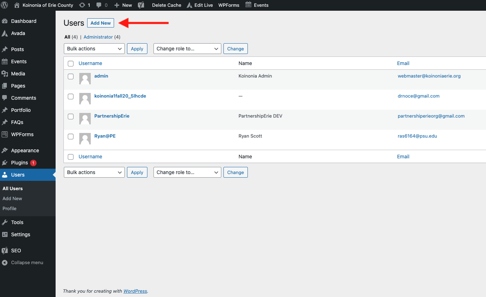
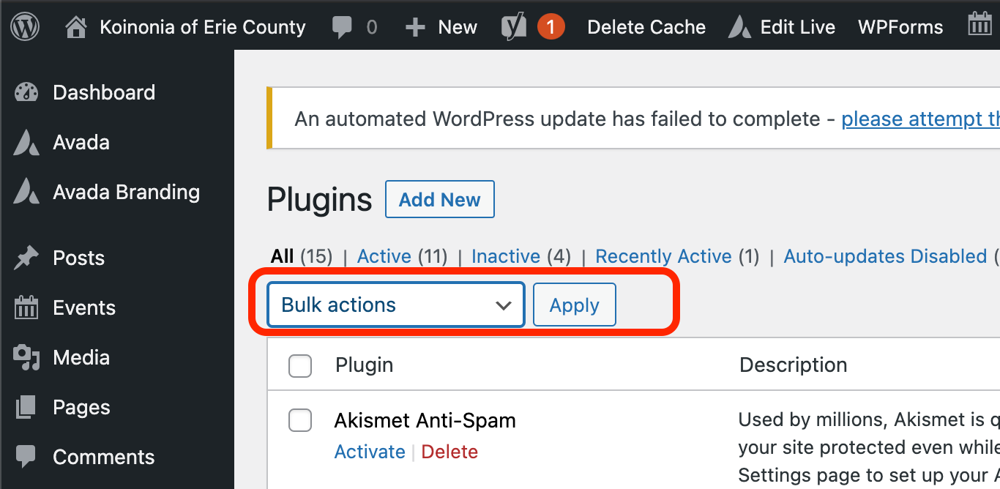

Site Documentation
Prepared by Ryan A. Scott
Updated July 5 , 2021.
The Fallen Rider Memorial Fund of PA website is developed by Partnership Erie, an Outreach Program of the Black School of Business at Penn State Erie, The Behrend College. It is developed using the content-management-system (CMS) known as WordPress and utilizes the Avada by Themefusion template/builder. Avada offers extensive documentation that can be accessed by clicking the following link:
Avada Docs
Quick Links
Logging into your Site
- Navigate to www.fallenriderspa.org/wp-admin
- Input your username/email address and password and click the blue "Log In" button
- The dashboard will now be loaded. This is the backend of your website. This page shows basic website information, but it is not often used besides when logging in.

- The grey sidebar on the left side of the screen is where you primarily will be using your site
Adding New Users/New Administrators
- The main purpose of adding users is if you want to grant someone access to the backend of the site and assist/handle/manage the users, pages, events, or anything else administrative on the website
- Navigate to www.fallenriderspa.org/wp-admin
- Once logged in, click on "Users" in the grey sidebar
- All users will be displayed in a table on this page.
- To add a new user, click the "Add New" Button in the top left of the screen.

- A form to enter in user information will now be displayed. Input username and email, and save the password for later or change it to something easier here, after clicking “Show Password”.
- To give users full access to the site, in the “Role” drop down box, select “Administrator”
- Once you are completed inputting information, click the “Add New User Button”
Utilizing Contact Forms
The Contact Form and Comfort Bag Form automatically sends all inputs via email to TBD and a stored database on the backend of the website. In order to access the database:
- Navigate to www.fallenriderspa.org/wp-admin
- Once logged in, Navigate to "Avada" on the grey sidebar.
- Select Forms
- To view entries, click "view entries" under the entries column for the respectful form (ex. contact form).
- To edit forms, click the name of the form you want to edit, and it will take you into the editor.
Updating WordPress Plugins
You may have to update your website from time to time, and it is important to keep your plugins/resources updated. For the most part, you should be able to operate the site without updating any plugins but there are inherent security risks with using out of date software.
- Navigate to www.fallenriderespa.org/wp-admin
- Once logged in, click on "Plugins" in the grey sidebar towards the bottom.
- The plugins page will now be displayed.
- In most cases, click the blank check mark box on the top of the table.

- Then click the “Bulk Actions” drop down box above the table
- Then select “Update” from the drop down box, and click the “Apply” button

- It may take a few minutes to update / respond. The table will reflect if an update has occurred
- You have now successfully updated your website plugins!